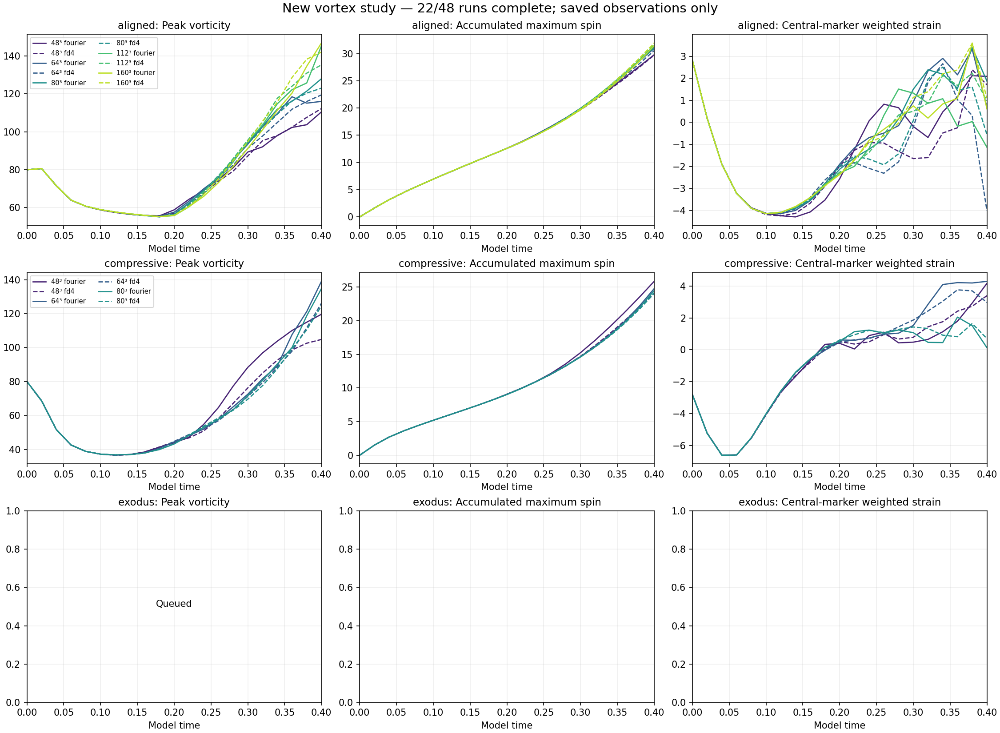

← All reports · Published snapshot: 2026-10-08T20:40:59.597392+00:00
New controlled comparison · design 2
One core. Three surroundings.
22 of 48 runs complete. The matrix is still running; queued cases and refinements have no results yet.
See the vortex change shape
Rotate the flow. Step through the saved times. Compare the surroundings.
THROUGH THE CENTER
Surfaces mark two fixed spin levels, not walls. The slice colors use the same scale in every frame.
What this view measures
Spin is |curl u|. The 3D surfaces are interpolated from a 64³ display sample of the selected field; slices use its native grid. Peak values come from the full grid. These surfaces are for viewing shape, not measuring core width. Playback steps through stored times without inventing motion between frames. Dragging rotates the camera. Values are in the study’s model units.
Starting fields and settings
These are new starting fields for the requested comparison. A central localized vortex is paired with an aligned, compressive, or initially departing background. All start at maximum vorticity 80. The cube has side 6, viscosity 0.001, zero mean velocity, and zero external force. The endpoint is model time 0.40.
| Case at 48³ | Initial W | Origin background strain | Core width in cells | Minimum mean outward speed |
|---|---|---|---|---|
| aligned | 80.00 | 4.000 | 8.37 | -0.000 |
| compressive | 80.00 | -4.000 | 8.37 | 0.000 |
| exodus | 80.00 | -4.731 | 8.37 | 1.618 |
The initial strain sign and outward motion are verified. Sustained strain, later dispersal, and decay are outcomes to measure. The reverse case is the compressive variant; bending is not imposed.
Version 1 was rejected because reversing its surroundings only translated the whole field. Its short pilot is archived and excluded. Version 2 localizes the central tube axially. Its initial origin spin rates are 319.179 and -320.821, respectively.
All settings and scope · Initial and solver checks · Task state
Recorded curves

Solid lines: Fourier evolution. Dashed lines: fourth-order finite-difference evolution. Both use SSP RK3. The finite-difference pressure solve and shared filter use FFTs. Thus spatial transport is replicated, while the pressure backend and time integrator are shared.
Run matrix · 22 / 48 complete
| Case | Method | Grid | dt setting | Status | Saved t | Largest saved W | Last W | Last I |
|---|---|---|---|---|---|---|---|---|
| aligned | fourier | 48 | base | complete | 0.40 | 110.522 at 0.40 | 110.522 | 29.7886 |
| aligned | fd4 | 48 | base | complete | 0.40 | 112.241 at 0.40 | 112.241 | 29.7157 |
| aligned | fourier | 64 | base | complete | 0.40 | 118.515 at 0.36 | 116.061 | 30.9391 |
| aligned | fd4 | 64 | base | complete | 0.40 | 119.493 at 0.40 | 119.493 | 30.5421 |
| aligned | fourier | 80 | base | complete | 0.40 | 128.004 at 0.40 | 128.004 | 31.2598 |
| aligned | fd4 | 80 | base | complete | 0.40 | 123.022 at 0.40 | 123.022 | 31.0182 |
| aligned | fourier | 80 | half | complete | 0.40 | 128.003 at 0.40 | 128.003 | 31.2602 |
| aligned | fd4 | 80 | half | complete | 0.40 | 123.022 at 0.40 | 123.022 | 31.0185 |
| aligned | fourier | 112 | base | complete | 0.40 | 145.380 at 0.40 | 145.380 | 31.4919 |
| aligned | fd4 | 112 | base | complete | 0.40 | 135.352 at 0.40 | 135.352 | 31.7432 |
| aligned | fourier | 112 | half | complete | 0.40 | 145.384 at 0.40 | 145.384 | 31.4922 |
| aligned | fd4 | 112 | half | complete | 0.40 | 135.353 at 0.40 | 135.353 | 31.7434 |
| aligned | fourier | 160 | base | complete | 0.40 | 146.868 at 0.40 | 146.868 | 31.4630 |
| aligned | fd4 | 160 | base | complete | 0.40 | 142.058 at 0.40 | 142.058 | 31.9441 |
| aligned | fourier | 160 | half | complete | 0.40 | 146.870 at 0.40 | 146.870 | 31.4633 |
| aligned | fd4 | 160 | half | complete | 0.40 | 142.059 at 0.40 | 142.059 | 31.9442 |
| compressive | fourier | 48 | base | complete | 0.40 | 119.616 at 0.40 | 119.616 | 25.8477 |
| compressive | fd4 | 48 | base | complete | 0.40 | 104.780 at 0.40 | 104.780 | 24.1102 |
| compressive | fourier | 64 | base | complete | 0.40 | 139.003 at 0.40 | 139.003 | 24.7659 |
| compressive | fd4 | 64 | base | complete | 0.40 | 126.104 at 0.40 | 126.104 | 24.1302 |
| compressive | fourier | 80 | base | complete | 0.40 | 134.738 at 0.40 | 134.738 | 24.4599 |
| compressive | fd4 | 80 | base | complete | 0.40 | 124.580 at 0.40 | 124.580 | 24.0510 |
| compressive | fourier | 80 | half | running | 0.34 | 90.240 at 0.34 | 90.240 | 17.8321 |
| compressive | fd4 | 80 | half | running | 0.22 | 80.000 at 0.00 | 48.438 | 9.9441 |
| compressive | fourier | 112 | base | queued | — | — | — | — |
| compressive | fd4 | 112 | base | queued | — | — | — | — |
| compressive | fourier | 112 | half | queued | — | — | — | — |
| compressive | fd4 | 112 | half | queued | — | — | — | — |
| compressive | fourier | 160 | base | queued | — | — | — | — |
| compressive | fd4 | 160 | base | queued | — | — | — | — |
| compressive | fourier | 160 | half | queued | — | — | — | — |
| compressive | fd4 | 160 | half | queued | — | — | — | — |
| exodus | fourier | 48 | base | queued | — | — | — | — |
| exodus | fd4 | 48 | base | queued | — | — | — | — |
| exodus | fourier | 64 | base | queued | — | — | — | — |
| exodus | fd4 | 64 | base | queued | — | — | — | — |
| exodus | fourier | 80 | base | queued | — | — | — | — |
| exodus | fd4 | 80 | base | queued | — | — | — | — |
| exodus | fourier | 80 | half | queued | — | — | — | — |
| exodus | fd4 | 80 | half | queued | — | — | — | — |
| exodus | fourier | 112 | base | queued | — | — | — | — |
| exodus | fd4 | 112 | base | queued | — | — | — | — |
| exodus | fourier | 112 | half | queued | — | — | — | — |
| exodus | fd4 | 112 | half | queued | — | — | — | — |
| exodus | fourier | 160 | base | queued | — | — | — | — |
| exodus | fd4 | 160 | base | queued | — | — | — | — |
| exodus | fourier | 160 | half | queued | — | — | — | — |
| exodus | fd4 | 160 | half | queued | — | — | — | — |
Half-step repeats are included at 80³, 112³ and 160³ for both methods. The cases execute in the requested order. Peak timing here uses samples separated by 0.02.
Completed numerical comparisons
| Control | Run A | Reference B | Max W curve difference | Max I curve difference |
|---|---|---|---|---|
| method | aligned-fourier-n48-base | aligned-fd4-n48-base | 3.440% | 0.712% |
| grid | aligned-fourier-n48-base | aligned-fourier-n64-base | 13.684% | 3.718% |
| grid | aligned-fd4-n48-base | aligned-fd4-n64-base | 7.966% | 2.706% |
| method | aligned-fourier-n64-base | aligned-fd4-n64-base | 5.511% | 1.695% |
| grid | aligned-fourier-n64-base | aligned-fourier-n80-base | 9.331% | 1.026% |
| grid | aligned-fd4-n64-base | aligned-fd4-n80-base | 3.610% | 1.535% |
| method | aligned-fourier-n80-base | aligned-fd4-n80-base | 4.050% | 0.779% |
| timestep | aligned-fourier-n80-base | aligned-fourier-n80-half | 0.003% | 0.001% |
| timestep | aligned-fd4-n80-base | aligned-fd4-n80-half | 0.003% | 0.001% |
| grid | aligned-fourier-n80-base | aligned-fourier-n112-base | 11.952% | 0.737% |
| grid | aligned-fd4-n80-base | aligned-fd4-n112-base | 9.110% | 2.284% |
| method | aligned-fourier-n112-base | aligned-fd4-n112-base | 7.409% | 0.890% |
| timestep | aligned-fourier-n112-base | aligned-fourier-n112-half | 0.002% | 0.001% |
| timestep | aligned-fd4-n112-base | aligned-fd4-n112-half | 0.002% | 0.001% |
| grid | aligned-fourier-n112-base | aligned-fourier-n160-base | 6.023% | 0.842% |
| grid | aligned-fd4-n112-base | aligned-fd4-n160-base | 5.191% | 0.629% |
| method | aligned-fourier-n160-base | aligned-fd4-n160-base | 5.794% | 1.670% |
| timestep | aligned-fourier-n160-base | aligned-fourier-n160-half | 0.001% | 0.001% |
| timestep | aligned-fd4-n160-base | aligned-fd4-n160-half | 0.001% | 0.000% |
| method | compressive-fourier-n48-base | compressive-fd4-n48-base | 14.159% | 7.206% |
| grid | compressive-fourier-n48-base | compressive-fourier-n64-base | 13.947% | 5.504% |
| grid | compressive-fd4-n48-base | compressive-fd4-n64-base | 16.910% | 1.490% |
| method | compressive-fourier-n64-base | compressive-fd4-n64-base | 10.229% | 2.635% |
| grid | compressive-fourier-n64-base | compressive-fourier-n80-base | 5.676% | 1.251% |
| grid | compressive-fd4-n64-base | compressive-fd4-n80-base | 1.409% | 0.329% |
| method | compressive-fourier-n80-base | compressive-fd4-n80-base | 8.154% | 1.700% |
Differences are maximum absolute curve differences divided by the reference curve maximum. Full-field comparisons use the coarser retained Fourier modes and are recorded separately.
Resolution and validity
| Completed run | First resolution flag at | Smallest global chord, cells | Largest high-band enstrophy |
|---|---|---|---|
| aligned-fd4-n112-base | 0.28 | 3.32 | 4.93% |
| aligned-fd4-n112-half | 0.28 | 3.32 | 4.93% |
| aligned-fd4-n160-base | 0.32 | 3.88 | 2.73% |
| aligned-fd4-n160-half | 0.32 | 3.88 | 2.73% |
| aligned-fd4-n48-base | 0.20 | 2.54 | 12.79% |
| aligned-fd4-n64-base | 0.24 | 2.46 | 8.85% |
| aligned-fd4-n80-base | 0.26 | 2.94 | 7.07% |
| aligned-fd4-n80-half | 0.26 | 2.94 | 7.07% |
| aligned-fourier-n112-base | 0.28 | 3.25 | 5.32% |
| aligned-fourier-n112-half | 0.28 | 3.25 | 5.32% |
| aligned-fourier-n160-base | 0.32 | 5.36 | 2.98% |
| aligned-fourier-n160-half | 0.32 | 5.36 | 2.98% |
| aligned-fourier-n48-base | 0.20 | 2.46 | 13.00% |
| aligned-fourier-n64-base | 0.22 | 2.53 | 9.24% |
| aligned-fourier-n80-base | 0.24 | 2.64 | 7.24% |
| aligned-fourier-n80-half | 0.24 | 2.65 | 7.24% |
| compressive-fd4-n48-base | 0.16 | 1.90 | 16.10% |
| compressive-fd4-n64-base | 0.16 | 2.54 | 11.59% |
| compressive-fd4-n80-base | 0.20 | 3.15 | 11.02% |
| compressive-fourier-n48-base | 0.16 | 1.71 | 17.03% |
| compressive-fourier-n64-base | 0.18 | 2.27 | 12.11% |
| compressive-fourier-n80-base | 0.20 | 2.68 | 11.50% |
Fewer than six cells across a measured chord or more than 1% of enstrophy in the highest retained band flags a resolution concern. These screening levels do not prove convergence or failure of the continuous equation.
No hard numerical failure has been recorded.
Measurement details
- W: maximum magnitude of Fourier curl on grid points; native FD curl is recorded separately.
- I: maximum spin integrated at every RK stage. Its finite numerical value is not a continuum bound.
- Core width: twelve transverse half-peak chords through a sampled peak, in domain units and cells. Interpolation adds no resolution.
- Central measurements use a fixed radius-one region and material markers. Neither is an automatic vortex identity tracker.
- Exodus distances compare advected centreline markers using periodic distance. Viscosity can move vorticity relative to those material points. Separation and weakened central strain must both be observed before claiming exodus.
- Energy and native-enstrophy balance residuals, fixed threshold volumes, mean momentum, divergence, eigenalignment and spin ratios are in each saved result.